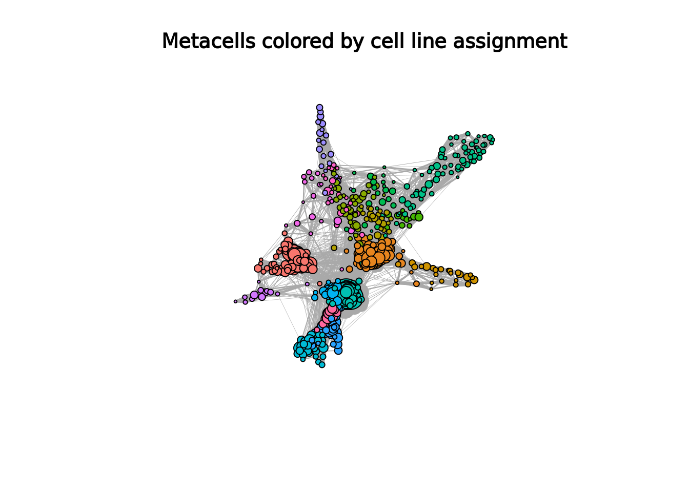

3.3 SuperCell (R)
In this section, we construct metacells using SuperCell. The code is adapted from the author’s github documentation. For more information on the method, please refer to the section 2.2.
Importing R packages
To run SuperCell, the following python packages need to be imported:
if(system.file(package='SuperCell') == ""){
remotes::install_github("GfellerLab/SuperCell", force = TRUE, upgrade = FALSE)
}
library(SuperCell)import sys
sys.path.append('./mc_QC/')
import mc_QC
import pandas as pd
import scanpy as sc
import SEACellsIf you don’t have these packages installed, please refer to the section 2 of chapter 1.
3.3.1 Data loading
Similarly to Metacell-2 and SEACells, we will run SuperCell on the single-cell dataset composed of XX peripheral blood mononuclear cells (PBMCs). Please follow the section 4 from Chapter 1 to retrieve these data from the scanpy package and save the data in the following file: “data/3k_pbmc/singlecell_anndata_filtered.h5ad”.
MC_tool = "SuperCell"
proj_name = "3k_pbmc"
sc_data = readRDS(paste0("data/", proj_name, "/singlecell_seurat_filtered.rds"))3.3.2 Filtering steps
In this tutorial, the data have been pre-filtered in the section XX of chapter XX.
3.3.3 Building metacells
Metacells construction using SuperCell requires one main inputs, i.e. a matrix of log-normalized gene expression data which will be used to compute PCA to build a knn graph for metacells identification.
Important optional inputs are: i) the graining level (gamma parameter),
ii) the number of neighbors to consider for the knn graph (k.knn parameter).
Data pre-processing
SuperCell builds a knn graph based on a lower-dimensional embedding of the data. The computation of this embedding is performed internally in the SCimplify SuperCell function.
No pre-processing is thus required from the users.
library(Seurat)
#> Attaching SeuratObject
sc_data <- NormalizeData(sc_data, normalization.method = "LogNormalize")
sc_data <- FindVariableFeatures(sc_data, nfeatures = 1000)
sc_data <- ScaleData(sc_data)
#> Centering and scaling data matrix
sc_data <- RunPCA(sc_data, npcs = 10, features = )
#> PC_ 1
#> Positive: LTB, CD2, ACAP1, STK17A, CTSW, CCL5, GIMAP5, AQP3, GZMA, CST7
#> MAL, HOPX, GZMK, NKG7, KLRG1, LYAR, RIC3, PRF1, FAM107B, CCND3
#> CD79A, SRSF7, PASK, PTPN4, GZMH, GPR183, FGFBP2, TIGIT, TCL1A, ARID5B
#> Negative: CST3, TYROBP, LST1, AIF1, FTL, LYZ, FTH1, FCN1, S100A9, TYMP
#> FCER1G, CFD, LGALS1, S100A8, LGALS2, CTSS, IFITM3, PSAP, CFP, SAT1
#> IFI30, COTL1, S100A11, NPC2, LGALS3, GSTP1, NCF2, PYCARD, CDA, GPX1
#> PC_ 2
#> Positive: NKG7, CST7, GZMA, PRF1, GZMB, FGFBP2, CTSW, GNLY, CCL4, GZMH
#> CCL5, FCGR3A, XCL2, CLIC3, SRGN, HOPX, S100A4, TTC38, IGFBP7, ID2
#> ANXA1, ACTB, TMSB4X, APOBEC3G, KLRG1, LYAR, CD160, ABI3, HAVCR2, IFITM2
#> Negative: CD79A, MS4A1, HLA-DQA1, HLA-DQB1, TCL1A, HLA-DRA, CD79B, CD74, HLA-DRB1, HLA-DPB1
#> HLA-DMA, HLA-DRB5, HLA-DPA1, FCRLA, LTB, HVCN1, BLNK, P2RX5, IRF8, IGLL5
#> SMIM14, PPP1R14A, C16orf74, MZB1, RP5-887A10.1, BTK, RP11-428G5.5, IL4R, PHACTR1, IGJ
#> PC_ 3
#> Positive: HLA-DPA1, HLA-DPB1, HLA-DRB5, HLA-DRB1, CD74, HLA-DQB1, HLA-DQA1, CD79B, HLA-DRA, CD79A
#> MS4A1, RBM3, HLA-DMA, IFITM2, TCL1A, CSNK2B, HVCN1, UBE2L6, YWHAB, IRF8
#> CTSS, PSMA7, UBXN1, S100A4, C1orf162, PYCARD, APOBEC3G, SMIM14, SRSF7, TYROBP
#> Negative: PPBP, PF4, SDPR, SPARC, GNG11, NRGN, HIST1H2AC, GP9, RGS18, TUBB1
#> CLU, AP001189.4, CD9, ITGA2B, PTCRA, CA2, TMEM40, ACRBP, MMD, TREML1
#> SEPT5, RUFY1, MYL9, TSC22D1, MPP1, CMTM5, LY6G6F, GP1BA, RP11-367G6.3, CLEC1B
#> PC_ 4
#> Positive: HLA-DQA1, CD79B, CD79A, CD74, HLA-DQB1, HLA-DPB1, MS4A1, HLA-DPA1, HLA-DRB1, HLA-DRA
#> HLA-DRB5, TCL1A, GZMB, FGFBP2, HLA-DMA, NKG7, PRF1, HVCN1, CST7, GNLY
#> FCRLA, FCGR3A, GZMH, GZMA, CCL4, IRF8, BLNK, IGLL5, CLIC3, P2RX5
#> Negative: FYB, MAL, S100A8, AQP3, TMSB4X, CD2, S100A9, S100A4, GIMAP4, RBP7
#> GIMAP5, S100A12, LGALS2, ANXA1, FOLR3, LYZ, FCN1, PASK, MS4A6A, S100A11
#> CORO1B, AIF1, IL8, ATP5H, CRIP2, IL23A, PPA1, LTB, LGALS3BP, ASGR1
#> PC_ 5
#> Positive: S100A8, LGALS2, S100A9, S100A12, RBP7, FGFBP2, FOLR3, MS4A6A, GZMB, CCL4
#> CCL3, NKG7, GNLY, CST7, GSTP1, GZMA, PRF1, GZMH, ASGR1, CTSW
#> LYZ, CCL5, CLIC3, XCL2, TYROBP, IL8, FCN1, GPX1, FCGR1A, TTC38
#> Negative: LTB, MS4A7, IFITM2, HN1, LILRB2, WARS, CTD-2006K23.1, AQP3, VMO1, GDI2
#> ADA, ANXA5, NAAA, FCGR3A, CORO1B, ABRACL, CD2, PPM1N, ATP5C1, HSP90AA1
#> TIMP1, ARL6IP5, ICAM2, COTL1, C1QA, OAS1, PPA1, MAL, ABI3, TNFSF10
sc_data <- RunUMAP(sc_data, reduction = "pca", dims = c(1:10), n.neighbors = 10)
#> Warning: The default method for RunUMAP has changed from calling Python UMAP via reticulate to the R-native UWOT using the cosine metric
#> To use Python UMAP via reticulate, set umap.method to 'umap-learn' and metric to 'correlation'
#> This message will be shown once per session
#> 15:23:33 UMAP embedding parameters a = 0.9922 b = 1.112
#> 15:23:33 Read 2638 rows and found 10 numeric columns
#> 15:23:33 Using Annoy for neighbor search, n_neighbors = 10
#> 15:23:33 Building Annoy index with metric = cosine, n_trees = 50
#> 0% 10 20 30 40 50 60 70 80 90 100%
#> [----|----|----|----|----|----|----|----|----|----|
#> **************************************************|
#> 15:23:33 Writing NN index file to temp file /tmp/RtmpfxPN15/file9ea5737c903
#> 15:23:33 Searching Annoy index using 1 thread, search_k = 1000
#> 15:23:34 Annoy recall = 100%
#> 15:23:34 Commencing smooth kNN distance calibration using 1 thread with target n_neighbors = 10
#> 15:23:34 Initializing from normalized Laplacian + noise (using irlba)
#> 15:23:34 Commencing optimization for 500 epochs, with 34256 positive edges
#> 15:23:36 Optimization finished
UMAPPlot(sc_data, group.by = "louvain")
Setting up SuperCell parameters
In this tutorial, we will use in the SuperCell method using the 10 first principal components resulting from the PCA. We chose a graining level of 50 and a number of neighbors of 15 for knn.
gamma = 50 # the requested graining level.
k.knn = 15 # the number of neighbors considered to build the knn network.
nb.var.genes = 1000 # number of the top variable genes to use for dimensionality reduction Metacells idenification
MC <- SuperCell::SCimplify(sc_data@assays$RNA@data, # single-cell log-normalized gene expression data
k.knn = k.knn,
gamma = gamma,
n.var.genes = nb.var.genes
)SuperCell returns a list containing the following main elements:
i) the single-cell assignments to metacells (membership),
ii)
Retrieve aggregated metacell data
The supercell_GE() function can be used to generate a metacell count matrix (aggregation of counts across all cells belonging to each metacell).
Two modes can be used for single-cell aggregation, i.e. averaging or summing counts (using the mode parameter).
MC.GE <- supercell_GE(sc_data@assays$RNA@counts, MC$membership, mode = "sum")
dim(MC.GE)
#> [1] 32738 533.3.4 Visualize metacells
We can assign each metacell to a particular annotation using the supercell_assign() function.
By default, this function assigns each metacell to a cluster with the largest Jaccard coefficient to avoid biases towards very rare or very abundant clusters.
Alternatively, assignment can be performed using relative (may cause biases towards very small populations) or absolute (may cause biases towards large populations) abundance with method = "relative" or method = "absolute", respectively.
MC$annotation <- supercell_assign(clusters = sc_data@meta.data$louvain, # single-cell annotation
supercell_membership = MC$membership, # single-cell assignment to metacells
method = "jaccard")The SuperCell package provides the supercell_plot function to visualize the metacell network, which is stored MC object in graph.supercells.
The metacells can be colored with respect to a vector of annotation.
supercell_plot(
MC$graph.supercells,
group = MC$annotation,
seed = 1,
alpha = -pi/2,
main = "Metacells colored by cell line assignment"
)
To visualize the metacells, we can project the metacells on the single-cell UMAP representation using the plot.plot_2D included in the SEACells package.
To use this function we need to create a anndata object as well as to run UMAP on the single cell data.
library(anndata)
# Create anndata object from R
r_ad <- AnnData(X = Matrix::t(sc_data@assays$RNA@counts),
obs = sc_data@meta.data,
obsm = list(X_pca = sc_data@reductions$pca@cell.embeddings,
X_umap = sc_data@reductions$umap@cell.embeddings)
)
r_ad$obs['membership'] <- MC$membership # save anndata object in python environment
ad = r.r_ad mc_proj = mc_QC.mc_visualize(ad, key='X_umap', group_by_name='membership', colour_sc_name='membership', colour_mc_name='membership', colour_metacells=True, legend_sc=None, legend_mc=None)
mc_proj.show()
3.3.5 Metacell QC
Compute purity, compactness and separation metrics
The following code chunk adds a columns named membership and containing the single_cell assignments to the obs attribute in the anndata object containing the raw data.
This annotation will be used in the mc_QC package to compute metacells quality metrics.
library(anndata)
# Create anndata object from R
r_mc_ad <- AnnData(X = Matrix::t(MC.GE),
obs = data.frame(annotation = MC$annotation))# save anndata object in python environment
mc_ad = r.r_mc_ad Size distribution
#mc_size = SEACells.plot.plot_SEACell_sizes(ad, bins=20)
#mc_ad.obs = pd.merge(mc_ad.obs, mc_size, left_index=True, right_index=True)
#mc_ad.obsWhen available, we can use cell annotation to annotate each metacell to the most abundant cell category (e.g. cell type) composing the metacell. This also allows us to compute metacell purity. If the annotation considered is the cell type, the purity of a metacell is the proportion of the most abundant cell type within the metacell [ref SuperCell]
mc_purity = mc_QC.purity(ad, annotation_label, MC_label = 'membership')
mc_purity.head()
#> louvain louvain_purity
#> membership
#> 1.0 CD4 T cells 0.973684
#> 2.0 CD4 T cells 0.975610
#> 3.0 CD4 T cells 0.990476
#> 4.0 CD8 T cells 0.871287
#> 5.0 CD14+ Monocytes 0.764706
# add purity to metadata
mc_ad.obs['purity'] = list(mc_purity[annotation_label + "_purity"])The compactness of a metacell is the variance of the components within the metacell [ref SEACells]
compactness = mc_QC.compactness(ad, 'X_pca', MC_label = 'membership', DO_DC = False, name = 'Compactness_PCA', n_comp=10)['Compactness_PCA']
# add compactness to metadata
mc_ad.obs['Compactness_PCA'] = list(compactness)The separation of a metacell is the distance to the closest metacell [ref SEACells]
separation = mc_QC.separation(ad, 'X_pca', MC_label = 'membership', DO_DC = False, name = 'Separation_PCA', n_comp=10)['Separation_PCA']
# add separation to metadata
mc_ad.obs['Separation_PCA'] = list(separation)ad.uns['mc_obs'] = mc_ad.obs
mc_QC.mc_visualize_continuous(ad, key='X_umap', group_by_name='membership',
colour_sc_name='louvain', colour_mc_name='purity', colour_metacells=True,
legend_sc=None, legend_mc='auto', metacell_size=30)
mc_QC.mc_visualize_continuous(ad, key='X_umap', group_by_name='membership',
colour_sc_name='louvain', colour_mc_name='Compactness_PCA', colour_metacells=True,
legend_sc=None, legend_mc='auto', metacell_size=30) 
mc_QC.mc_visualize_continuous(ad, key='X_umap', group_by_name='membership',
colour_sc_name='louvain', colour_mc_name='Separation_PCA', colour_metacells=True,
legend_sc=None, legend_mc='auto', metacell_size=30)